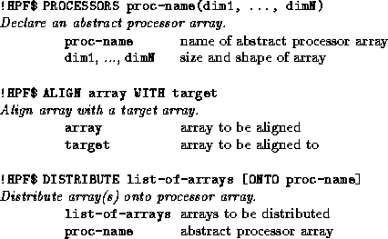
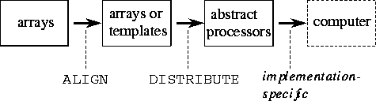
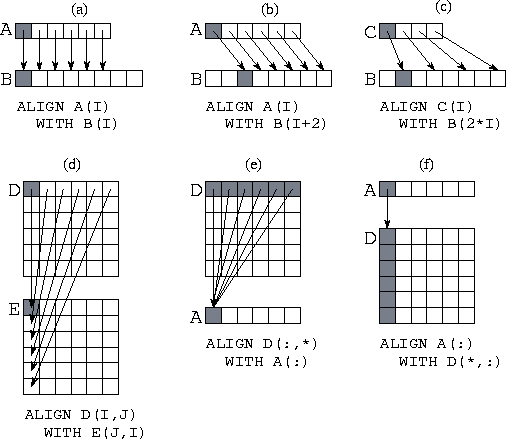
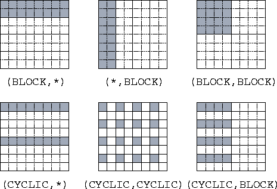
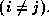
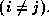

![[DBPP]](pictures//asm_color_tiny.gif)


![[Search]](pictures//search_motif.gif)
Array expressions specify concurrency but not locality. That is, they specify opportunities for parallel execution but not how these opportunities should be exploited so as to minimize communication costs on a parallel computer. HPF introduces data distribution directives to provide the programmer with control over locality. These directives work as follows. The PROCESSORS directive is used to specify the shape and size of an array of abstract processors. The ALIGN directive is used to align elements of different arrays with each other, indicating that they should be distributed in the same manner. The DISTRIBUTE directive is used to distribute an object (and any other objects that may be aligned with it) onto an abstract processor array. The mapping of abstract processors to physical processors is implementation dependent and is not specified in the language. The three directives are summarized in Figure 7.4.
Figure 7.5 illustrates the use of ALIGN and DISTRIBUTE. The two-phase mapping strategy reduces the number of changes needed to move from one machine to another. A different machine may necessitate a different partitioning strategy but is less likely to require changes to array alignments.

Figure 7.4: HPF data distribution directives.

Figure 7.5: HPF data allocation model. The mapping of data to abstract
processors is performed in two phases: ALIGN is used to create a
relationship between objects and DISTRIBUTE is used to partition
onto processors both a specified object and any objects that are
aligned with it.
Data distribution directives can have a major impact on a program's performance but do not affect the result computed. In this sense, they are similar to FM mapping annotations. However, they have a more profound effect on program structure: they affect partitioning, agglomeration, and communication as well as mapping. As in FM, this orthogonality makes it possible to experiment with alternative parallel algorithms simply by changing directives.
Data distribution directives are recommendations to an HPF compiler, not instructions. The compiler does not have to obey them if, for example, it determines that performance can be improved by ignoring them.
A PROCESSORS directive declares a named arrangement of abstract processors. For example, both of the following statements declare 32 abstract processors.
!HPF$ PROCESSORS P(32)!HPF$ PROCESSORS Q(4,8)
Normally, one abstract processor is created for each physical processor, although an implementation could in principle use a smaller number of physical processors to implement the abstract processors. The mapping of abstract processors to physical processors is not specified in HPF and can vary according to the implementation.
The ALIGN directive is used to specify array elements that should, if possible, be collocated ---mapped to the same processor. Operations between aligned data objects are likely to be more efficient than operations between objects that are not known to be aligned. An alignment directive has the general form
!HPF$ ALIGN array WITH targetwhich indicates that the specified array should be aligned with target. A list of subscripts associated with the array and target control the alignment, For example, the following code specifies a simple alignment of arrays B and C in which each B(i) is aligned with the corresponding C(i).
real B(50), C(50)!HPF$ ALIGN C(:) WITH B(:)

Figure 7.6: Six examples of the HPF ALIGN statement, with arrows
and shading used to associate representative aligned components in the
two arrays being aligned. (a) A simple alignment of two
one-dimensional arrays. (b) Alignment with an offset. (c) An alignment
of a smaller array onto a larger. (d) Alignment with indices inverted
(transpose). (e) Collapsing a dimension: aligning a two-dimensional
array with a one-dimensional array. (f) Replicating data: aligning a
one-dimensional array with a two-dimensional
array.
Dummy arguments can be used in ALIGN directives to name dimensions, integer expressions can be used to specify offsets, and * can be used to collapse dimensions. See Figure 7.6 for examples of the alignments that can be specified using these mechanisms. Notice that an ALIGN statement can be used to specify that elements of an array should be replicated over processors. This can improve efficiency if the array is read more often than it is written. For example, assume that the two-dimensional array Y(N,N) is to be distributed by columns so that each processor performs computation on one or more columns. If the computation performed at a single processor requires data from a one-dimensional array X(N) that is not updated during a computation, replicating X may be useful. This is accomplished by the following alignment directive
!HPF$ ALIGN X(*) WITH Y(*,j)
Care must be taken not to replicate arrays that are frequently updated, as considerable communication and/or redundant computation can result.
A DISTRIBUTE directive is used to indicate how data are to be partitioned among computer memories. It specifies, for each dimension of an array, a mapping of array indices to abstract processors in a processor arrangement. Each dimension of an array may be distributed in one of three ways.
* : No distributionBLOCK(n) : Block distribution (default: n= N/P )
CYCLIC(n) : Cyclic distribution (default: n=1)

Figure 7.7: The HPF DISTRIBUTE statement, as used to specify
different distributions of a two-dimensional array of size onto four processors organized either as a one-dimensional array
(in the three examples with a `` *'') or as a array
(in the other three examples). The data mapped to processor 1 is
shaded in each example.
Let N be the number of elements in an array dimension, and let P be the number of processors assigned to that dimension. Then, as illustrated in Figure 7.7, a BLOCK distribution divides the indices in a dimension into contiguous, equal-sized blocks of size N/P , while a CYCLIC distribution maps every P th index to the same processor. The optional integer argument to BLOCK and CYCLIC specifies the number of elements in a block.
The ONTO specifier can be used to perform a distribution across a particular processor array. If no processor array is specified, one is chosen by the compiler. Hence, both DISTRIBUTE statements in the following code fragment are valid.
!HPF$ PROCESSORS p(32)real D(1024), E(1024)
!HPF$ DISTRIBUTE D(BLOCK)
!HPF$ DISTRIBUTE E(BLOCK) ONTO p
A DISTRIBUTE directive applies not only to the named array but also to any arrays that are aligned with it. Thus, a DISTRIBUTE directive cannot be applied to an array that is aligned with another. For example, in the following code fragment the DISTRIBUTE directive specifies a mapping for all three arrays.
!HPF$ PROCESSORS p(20)real A(100,100), B(100,100), C(100,100)
!HPF$ ALIGN B(:,:) WITH A(:,:)
!HPF$ ALIGN C(i,j) WITH A(j,i)
!HPF$ DISTRIBUTE A(BLOCK,*) ONTO p
 .
. HPF Finite Difference:
HPF Finite Difference:
Program 7.2 is an HPF version of Program 7.1. Notice that only three directives have been added: PROCESSORS, DISTRIBUTE, and ALIGN. These directives partition each of the two arrays by row, hence allocating 25 rows to each of four processors.
The following is an alternative set of directives that partitions the
two arrays in two dimensions so that each processor has a block of
size 50 50. Notice that only the directives need to
be changed to specify this alternative algorithm.
50. Notice that only the directives need to
be changed to specify this alternative algorithm.
!HPF$ PROCESSORS pr(2,2)real X(100,100), New(100,100)
!HPF$ ALIGN New(:,:) WITH X(:,:)
!HPF$ DISTRIBUTE X(BLOCK,BLOCK) ONTO pr
As discussed in Example 3.4, the two-dimensional decomposition is typically more efficient than the one-dimensional decomposition.
 Pairwise Interactions:
Pairwise Interactions:
Consider the following version of the pairwise interactions problem of
Section 1.4.2. We must compute the total
force force acting on each of N
objects x.
This is defined as follows, where force and x
and x are
both 3-vectors and the function f computes the force between two
objects:

are
both 3-vectors and the function f computes the force between two
objects:

An HPF formulation of this problem is presented in Program 7.3. This program is defined for an array of ten processors. The arrays Force, Tmp, and X are aligned and distributed blockwise. The N(N-1) interactions are computed in N-1 steps, with the i th step computing interactions between each element X and the element offset by i in X. The CSHIFT operation is used to update a temporary array containing the offset values. This temporary array is shifted one element at each step. Each call to the function f computes N interactions.
Naively, we might expect each of the CSHIFT operations to result in a communication operation. On many machines, it will be more efficient to block these communications so that data circulates among the ten processors in just nine communication steps, as described in Section 1.4.2. An HPF compiler would normally be expected to perform this optimization.
© Copyright 1995 by Ian Foster